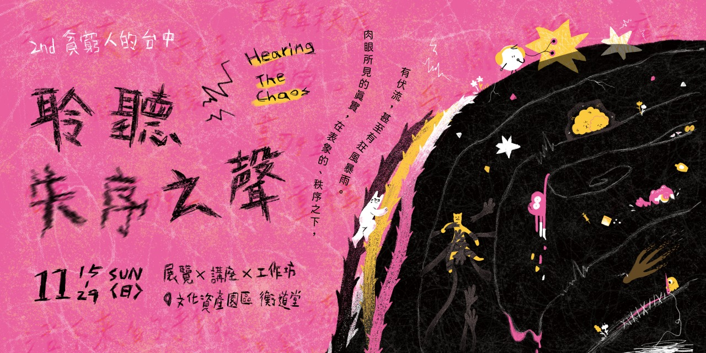
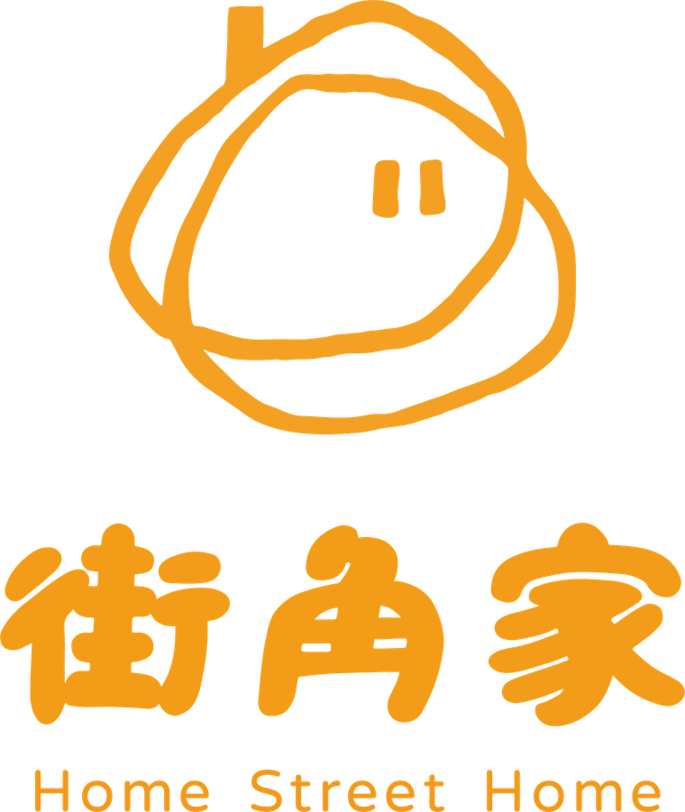
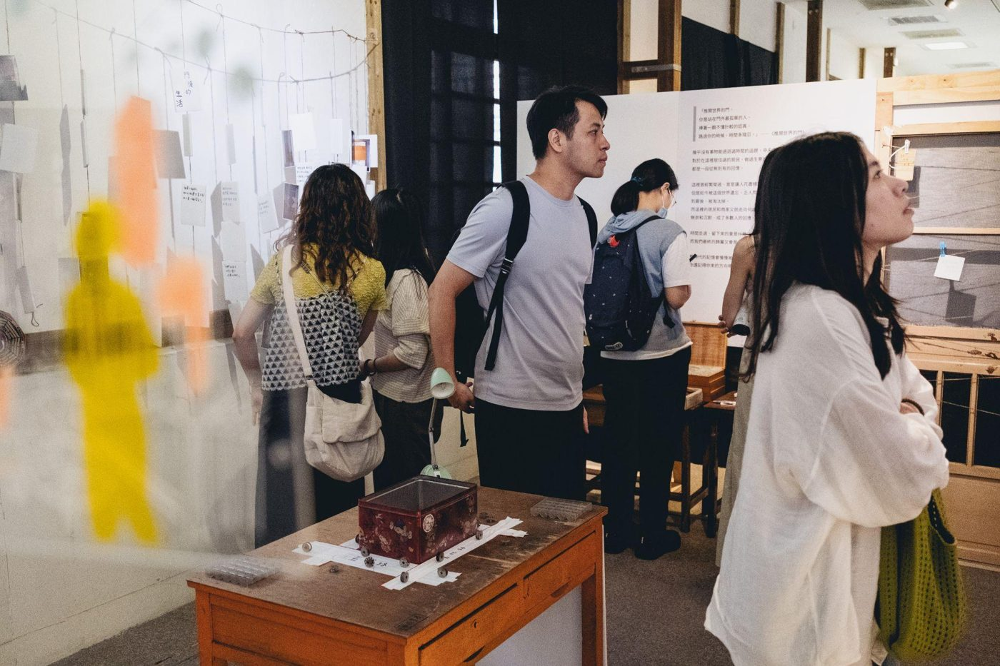
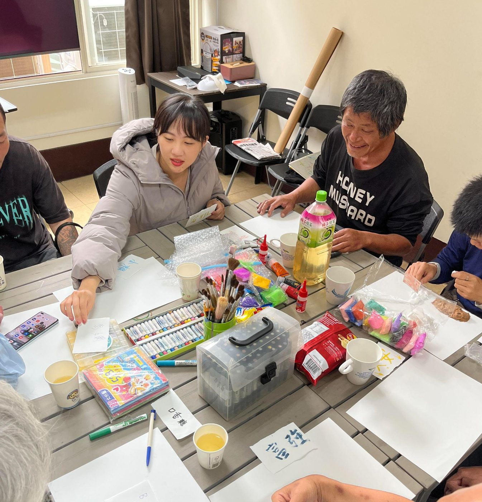
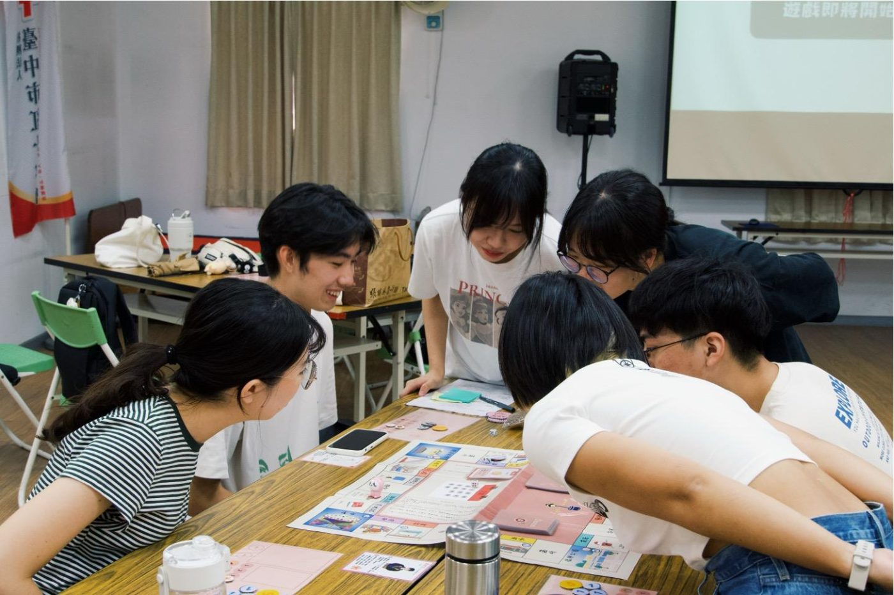
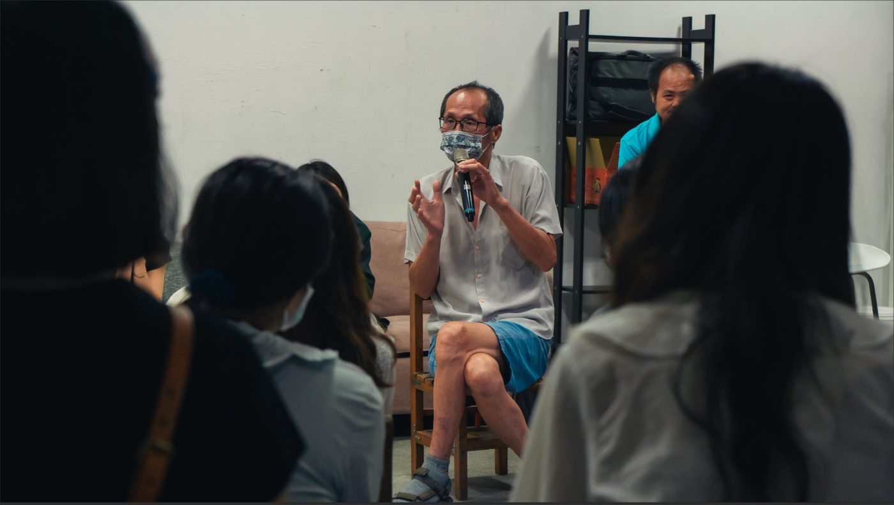
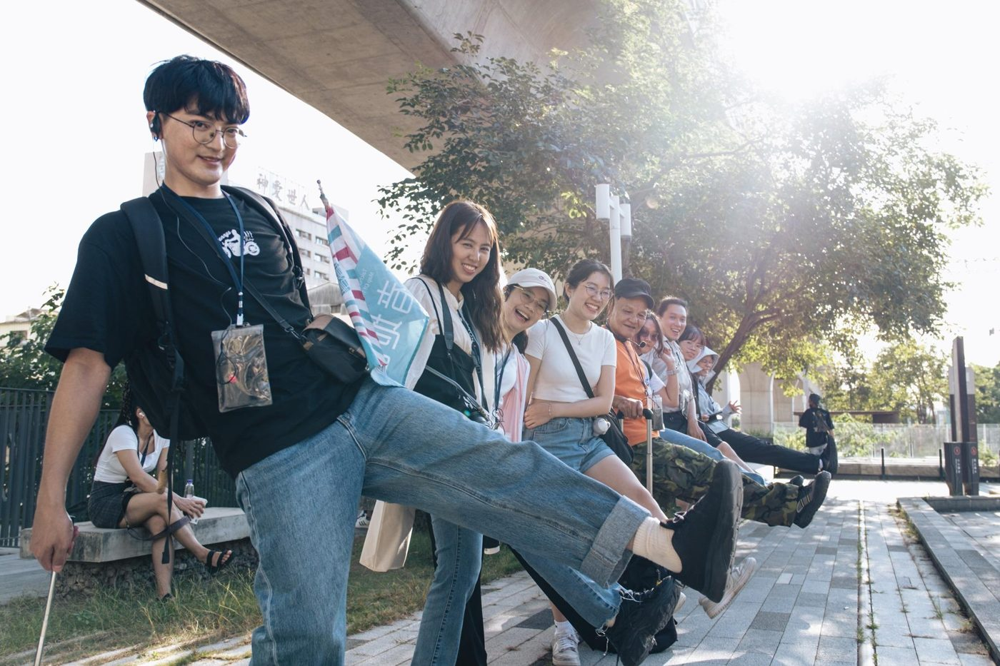

流浪、成癮、逃避、混亂、不努力，
面對這些生活狀態，我們很容易先下判斷。
在一座追求發展與進步的城市裡，這些看起來「不符合期待」的生活，也容易被忽略、被排除。
但我們很少停下來問：
一個人為什麼會走到這裡？在他身上發生了什麼事？
當城市選擇看不見貧窮，貧窮經驗者也可能在孤立中，越來越厭惡自己、與社會疏離。
所以，我們希望把貧窮帶回公共討論，讓更多人看見那些被忽略的人，也讓理解與支持有機會發生。
而「貧窮人的台中」，就是一座人與人之間能相遇的橋梁。

一場跨越汙名、團結抗貧的大型倡議行動
流浪、成癮、逃避、混亂、不努力，
面對這些生活狀態，我們很容易先下判斷。
在一座追求發展與進步的城市裡，這些看起來「不符合期待」的生活，也容易被忽略、被排除。
但我們很少停下來問：
一個人為什麼會走到這裡？在他身上發生了什麼事？
當城市選擇看不見貧窮，貧窮經驗者也可能在孤立中，越來越厭惡自己、與社會疏離。
所以，我們希望把貧窮帶回公共討論，讓更多人看見那些被忽略的人，也讓理解與支持有機會發生。
而「貧窮人的台中」，就是一座人與人之間能相遇的橋梁。
在每個看似「失序」的生命軌跡裡，都藏著一些深刻重要的經驗。
那些被稱為失序的狀態，有時既是痛苦留下的痕跡、是秩序重建前的動態過程，也是人努力活下去的策略。
本次展覽集結脆家兒少、藥癮經驗者、無家者、女性無家者與精神疾病經驗者的生命，帶領我們「聆聽失序之聲」。
我們想聽見的，不只是他們現在的樣子，還有那些樣子背後的故事：
他們曾經歷什麼？正在面對什麼？又是如何努力生活下來的？
邀請你走入展間「聆聽失序之聲」，讓我們一同重新定義「失序」，也在這些交錯的故事中，感受彼此的連結、一起探索在脆弱中生長的力量。
展覽免費入場，展期間全天開放。開幕式、講座、對談與工作坊需事先報名。
點選行事曆上的活動，即可前往該場報名頁面
地點：文化部文化資產園區（台中市南區復興路三段 362 號）
「貧窮人的台中」想對四種人說的話
長久以來，他們被社會單方面定義，這次，讓他們親自表達自己。
貧窮經常被視為失敗、落魄與羞恥，並被簡化為懶惰、愚笨、暴力或不值得同情。當一個人長期活在這些污名之中，不只失去求助與爭取權益的機會，也開始懷疑：自己的聲音是否值得被聽見？自己是否有可能改變生活？
這些污名阻礙了社會對貧窮的認識，使制度與福利無法回應貧窮經驗者的需求、改善其處境；反而因錯認貧窮，築起層層高牆，將窮人排除在資源網絡之外，強化其邊緣處境。於是，窮人要脫離貧窮變得難如登天，而社會要解決貧窮，也成了天方夜譚。
「唯有透過貧窮，方能理解貧窮，而能穿越貧窮。」
《貧窮人的台中》試圖讓貧窮與失序經驗者，成為自己生命故事的述說者與詮釋者，陪伴他們描述自身的痛苦、心中的失序或有序，以及背後尚未被好好聽見的需求。
當一個人能夠說出自己的故事，他便不再只是被定義的「可憐」或「可惡」的人，而是擁有自主性、經驗與發聲權的生命主體，從社會定義中拿回感受，由自己定義感受。
透過他們的聲音，我們不只看見痛苦、匱乏與被排除的處境，也看見其中的需求、判斷、力量與生存智慧。
這一次，我們不急著替他們找出答案，而是願意走進他們的視野，重新理解貧窮，重新思考何謂失序、秩序與生命的韌性。
這一次，換我們向經驗者學習。
我們希望，人們不只是旁觀社會議題，而是喚回人與人之間共同感受苦難的能力。
當貧窮在社會眼中是醜陋、恐懼與孤獨的，社會便可能害怕去理解貧窮經驗者，甚至極力掩蓋貧窮的存在。這樣的恐懼本身，會不會也是社會集體的失序？
面對公眾，我們希望創造一個有安全感、能產生共鳴的入口，人們能在靜靜觀看時浮現的感受與記憶中，發現生而為人的需求其實相似，自己也身處其中，只是所處的環境有所不同。
我們相信，當一個人開始看見自己的需求與匱乏，便更有機會看見他人的處境。這樣的公共教育，不只是告訴大眾貧窮有多需要被關注，更是在喚回人與人之間共同感受苦難的能力。
從社會參與中，找到賦權自身的自主性。
《貧窮人的台中》所號召的志工參與，是一條具有自主性、思考與感受的路徑。
我們透過建立平等、互為主體的志工關係，志工夥伴也藉由自身進入公共領域動機的探詢，讓原本可能只是單次參與的志工行動，轉而成為漫長而持續的社會運動。
透過連結，為貧窮共同積累集體的社會資本。
貧窮的背後，往往交織著許多不同議題：居住、精神疾病、成癮、家庭暴力、性別、弱勢兒少、社會排除、都市發展、勞動與醫療困境。
沒有任何一個組織，可以單獨承接所有交織的苦難。因此，街角家與《貧窮人的台中》都重視跨網絡、跨議題的合作與串連。
不只是貧窮經驗者需要重新建立社會中的支持網絡與連結能力，更是整個社會都需要找回連結。連結彼此，藉由不同視角互相學習、滋養與合作。我們期望在未來，有能力共同回應多重困境的經驗者，能成為集體社會的重要資本。
「沒有人能夠獨自承受世間的苦痛，我們都需要同伴，才能勇敢的負傷前行。」《希望的秘密》
「貧窮人的台中」是非營利的倡議行動，仰賴大眾的捐款持續舉辦。邀請你一起支持。
沒有任何一個組織，可以單獨承接所有交織的苦難。今年，我們與這些夥伴一同策展。



台灣街角家關懷協會（台中石頭湯）
做極端貧困者的倚靠、無助者的家。
街角家是一個在台中服務無家者的社福組織，關注城市裡不同型態的貧窮。一方面提供貧窮者生活支持、社區培力、義診與藝術療癒等直接服務；另一方面透過線下的倡議行動，幫助大眾理解貧窮的多元面向，減少對貧窮者的恐懼、污名與社會排除，一起搭建友善而共融的社會。
2024 年起，街角家把「窮學盟」每年舉辦的大型倡議行動〈貧窮人的台北〉帶到台中，發起「貧窮人的台中」，決心深耕這座城市裡的貧窮議題。
唯有透過貧窮，才能理解貧窮，
而能穿越貧窮。
由台北萬華的眾 NGO 組成了「窮學盟」（向貧窮者學習行動聯盟），開創大型貧窮倡議行動「貧窮人的台北」。
第一屆「貧窮人的台中」在與「貧窮人的台北」的串連之下誕生。我們希望開創一場以貧窮經驗者為主體的行動，將舞台交給被忽略的、受制的、失語的人們，在足夠安全、被尊重的發言空間下，產生貧窮者的主體和連結的可能。
我們以靜態展覽、議題講座、真人圖書館、跨領域串聯活動等多元的形式邀請社會大眾參與，嘗試撐開議題的空間，讓每個人能夠以最自在的方式了解與探索，以理解取代污名，以連結取代排除。
向貧窮者學習，刻劃出貧窮人的台中。我們將這場倡議行動扎根於台中，為中部地區帶來接觸議題的入口，也串聯在地的多個組織，讓每一場在地經驗與對話相互交織，陪伴中部的貧窮者們一起練習梳理、表達自身的生命故事，長出貧窮人的台中。
認識「貧窮人的台北」「今天繁華的台北，不單是成功的人、有錢人的台北；也應該是挫折的人、貧窮人的台北。」孫大川〈貧窮人的台北發起書〉
上一屆以「居住」為題，透過展覽與線下活動，邀請大眾走進貧窮者的生活場域，探究「危殆的居住，如何威脅貧窮者的生活、勞動與重建之路」。面向涵蓋無家者、女性安置機構、中央市場、家事移工、社會住宅等議題，描繪城市中多元的貧窮居住樣貌。

多種貧窮樣貌的議題展區，用文字、影像與互動體驗，讓觀展者成為展覽的一部分。

與經驗者一起動手創作，把生命經驗轉化為看得見、摸得到的作品。

在受限的經濟與社會處境中換位思考，體會在貧窮中生存的艱難。

經驗者與議題工作者現身說法，也與大眾交流提問。

跟著「看見台中城」的街友導覽員，走讀城市裡的貧窮故事。